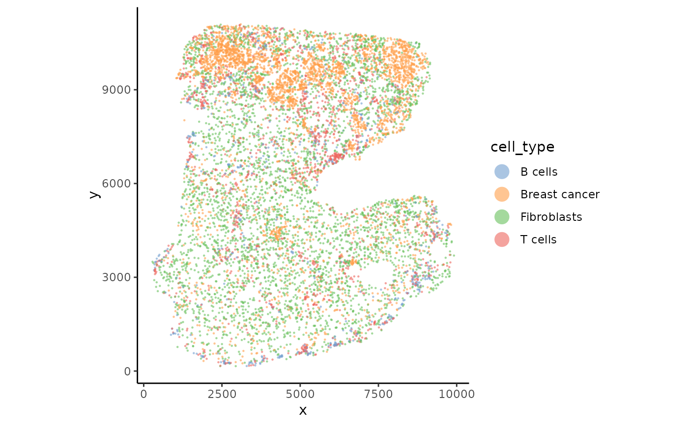

Plot cells based on spatial coordinates.
Usage
plotSpatial(
spe,
group.by = NULL,
feature = NULL,
assay = "counts",
type = c("log", "raw", "cpm", "logcpm"),
cols = NULL,
highlight = NULL,
cols.highlight = NULL,
pt.shape = 16,
pt.size = 0.3,
pt.size.highlight = 1,
pt.alpha = 1,
label = NULL,
cols.scale = NULL,
reverseY = NULL,
image = FALSE,
ncol = NULL,
per.scale = TRUE,
range = NULL,
transform = "identity",
...
)Arguments
- spe
A SpatialExperiment object.
- group.by
values to group points by. Must be in colData of spe. If NULL, will try with 'cols' if available.
- feature
Feature(s) to colour points by; must be in rownames(spe). If a vector of more than one feature is supplied, one panel is drawn per feature (see
per.scale,ncol), as inSeurat::FeaturePlot.- assay
Name of assay to use for plotting feature.
- type
Transformation to apply for the group/feature. Options are "raw" , "log", "cpm", "logcpm", or a function that accepts and returns a vector of the same length. For feature plots the legend title defaults to the matching unit ("Counts", "log2 Cts", "CPM", "log2-CPM"); for a single feature the gene name becomes the plot title. Override the legend with
label.- cols
Colour palette. Can be a vector of colours or a function that accepts an integer n and return n colours.
- highlight
Optional cells to emphasise, given as either a vector of group.by levels (characters or cluster numbers), or a logical vector of length ncol(spe) selecting cells directly. Highlighted cells are drawn last (on top) at pt.size.highlight; all other cells are light grey at pt.size.
- cols.highlight
Colour(s) for the highlighted cells. Defaults to NULL, which keeps each level's usual group.by palette colour. A single colour (e.g. "red") colours all highlighted cells the same; a vector matching the number of 'highlight' entries gives one colour per level (matched by position).
- pt.shape
shape of points.
- pt.size
size of points.
- pt.size.highlight
size of highlighted points (see highlight).
- pt.alpha
alpha of points between 0 and 1.
- label
label for the legend
- cols.scale
vector of position for color if colors should not be evenly positioned. See scale_color_gradientn. Only applicable for continuous values.
- reverseY
Logical. Whether to reverse Y coordinates. Default is TRUE if the spe contains an image (even if not plotted) and FALSE if otherwise.
- image
Logical. Whether to draw the background tissue image (forwarded to plotImage). Default FALSE.
- ncol
Number of columns when plotting multiple features. Passed to facet_wrap (shared scale) or wrap_plots (per-panel scales). Default NULL lets the layout be chosen automatically.
- per.scale
Logical. For multiple features, whether each panel gets its own colour scale (TRUE, default; like
Seurat::FeaturePlot, via the 'patchwork' package; the image is drawn in every panel) or a single shared colour scale across panels (FALSE).- range
Numeric length-2 (lower, upper) cap for continuous colour values
a single feature, or multiple features with a shared scale; values outside are clamped. A single value is taken as the upper bound. Default NULL (no capping). Ignored when
per.scale = TRUE(each panel auto-scales).
- transform
Name of a transformation for the continuous colour scale (e.g. "log10", "log1p", "pseudo_log", "sqrt"), passed to scale_color_gradientn; the colour spectrum is spaced by the transform while the legend stays in original units. Default "identity" (no transformation). Use "log10" for nicely log-spaced legend breaks (needs positive values); "log1p"/"pseudo_log" tolerate zeros but keep linear breaks. Only affects continuous (feature or numeric group.by) colouring. Use "log10" for log-spaced legend breaks (requires positive values); "log1p"/"pseudo_log" tolerate zeros but keep linear breaks.
- ...
Parameters pass to plotImage
Examples
data("xenium_bc_spe")
plotSpatial(spe, group.by = "cell_type", pt.size = 0.5, pt.alpha = 0.6)
